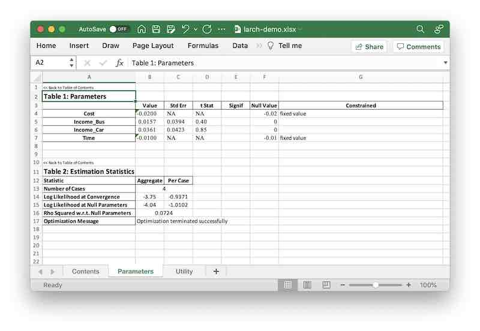

Choice Models
Contents
Choice Models¶
import larch.numba as lx
In this guide, we’ll take a look at building a discrete choice model using Larch. We assume you have a decent grasp of the fundamentals of choice modeling – if not, we suggest reading the Discrete Choice Modeling section of the Python for Transportation Modeling course.
Some addition advanced or detailed topics are broken out into seperate guides:
The examples below work with the tiny dataset introduced in the Data Fundamentals section.
data
---------------------------------------------------------------------------
NameError Traceback (most recent call last)
Input In [4], in <module>
----> 1 data
NameError: name 'data' is not defined
The basic structure of a choice model in Larch is contained in the
Model object.
m = lx.Model(data)
---------------------------------------------------------------------------
NameError Traceback (most recent call last)
Input In [5], in <module>
----> 1 m = lx.Model(data)
NameError: name 'data' is not defined
Choices¶
The dependent variable for a discrete choice model is an array that describes the choices. In Larch, there are three different ways to indicate choices, by assigning to different attributes:
m.choice_ca_var
: The choices are given by indicator values (typically but not
neccessarily dummy variables) in an idca variable.
m.choice_co_code
: The choices are given by altid values in an idco variable.
These choice codes are then converted to binary indicators
by Larch.
m.choice_co_vars
: The choices are given by indicator values (typically but not
neccessarily dummy variables) in multiple idco variables,
one for each alternative.
Given the dataset (which has all these formats defined), all the following choice definitions result in the same choice representation:
m.choice_co_code = 'ChosenCode'
---------------------------------------------------------------------------
NameError Traceback (most recent call last)
Input In [6], in <module>
----> 1 m.choice_co_code = 'ChosenCode'
NameError: name 'm' is not defined
m.choice_co_vars = {
1: 'ChosenCode == 1',
2: 'ChosenCode == 2',
3: 'ChosenCode == 3',
}
---------------------------------------------------------------------------
NameError Traceback (most recent call last)
Input In [8], in <module>
----> 1 m.choice_co_vars = {
2 1: 'ChosenCode == 1',
3 2: 'ChosenCode == 2',
4 3: 'ChosenCode == 3',
5 }
NameError: name 'm' is not defined
m.choice_ca_var = 'Chosen'
---------------------------------------------------------------------------
NameError Traceback (most recent call last)
Input In [10], in <module>
----> 1 m.choice_ca_var = 'Chosen'
NameError: name 'm' is not defined
After setting the choice definition, the loaded or computed choice array
should be available as the 'ch' DataArray in the model’s
dataset.
m.dataset['ch']
---------------------------------------------------------------------------
NameError Traceback (most recent call last)
Input In [12], in <module>
----> 1 m.dataset['ch']
NameError: name 'm' is not defined
Availability¶
In addition to the choices, we can also define an array that describes the availability of the various alternatives. Unlike the choices, for the availability factors we expect that we’ll need to toggle the availability on or off for potentially every alternative in each case, so there’s only two ways to define availability, by assigning to attributes:
m.availability_ca_var
: The availability of alternatives is given by binary values
(booleans, or equivalent integers) in an idca variable.
m.availability_co_vars
: The availability of alternatives is given by binary values
(booleans, or equivalent integers) in multiple idco variables,
one for each alternative.
Given the dataset, both of the following availability definitions result in the same availability representation:
m.availability_ca_var = "Time > 0"
---------------------------------------------------------------------------
NameError Traceback (most recent call last)
Input In [13], in <module>
----> 1 m.availability_ca_var = "Time > 0"
NameError: name 'm' is not defined
m.availability_co_vars = {
1: True,
2: 'BusTime > 0',
3: 'WalkTime > 0',
}
---------------------------------------------------------------------------
NameError Traceback (most recent call last)
Input In [15], in <module>
----> 1 m.availability_co_vars = {
2 1: True,
3 2: 'BusTime > 0',
4 3: 'WalkTime > 0',
5 }
NameError: name 'm' is not defined
After setting the availability definition, the loaded or computed availability array
should be available as the 'av' DataArray in the model’s
dataset.
m.dataset['av']
---------------------------------------------------------------------------
NameError Traceback (most recent call last)
Input In [17], in <module>
----> 1 m.dataset['av']
NameError: name 'm' is not defined
Utility Functions¶
Choice models in Larch rely on utility expressions that are
linear-in-parameters functions, which combine
parameters P and data
X. You can attach these function
expressions to the model in two ways:
m.utility_ca
: A linear function containing generic expressions
that are evaluated against the idca portion of the dataset.
These expression can technically also reference idco variables,
but to define a well-specified choice model with identifiable
parameters, each data term will need at least one idca
component.
m.utility_co
: A mapping of alternative-specific expressions that are evaluated
against only the idco portion of the dataset. Each key gives
an alternative id, and the values are linear functions.
These two utility function definitions are not mutually exclusive, and you can mix both types of functions in the same model.
from larch import P, X
m.utility_ca = P.Time * X.Time + P.Cost * X.Cost
---------------------------------------------------------------------------
NameError Traceback (most recent call last)
Input In [18], in <module>
1 from larch import P, X
----> 3 m.utility_ca = P.Time * X.Time + P.Cost * X.Cost
NameError: name 'm' is not defined
m.utility_co = {
1: P.Income_Car * X.Income / 1000,
2: P.Income_Bus * X.Income / 1000,
}
---------------------------------------------------------------------------
NameError Traceback (most recent call last)
Input In [20], in <module>
----> 1 m.utility_co = {
2 1: P.Income_Car * X.Income / 1000,
3 2: P.Income_Bus * X.Income / 1000,
4 }
NameError: name 'm' is not defined
The computed values for the utility function can be accessed using
the utility method, which also permits
the user to set new values for various model parameters.
m.utility(
{'Time': -0.01, 'Cost': -0.02, 'Income_Car': 0.1},
return_format='dataarray',
)
---------------------------------------------------------------------------
NameError Traceback (most recent call last)
Input In [22], in <module>
----> 1 m.utility(
2 {'Time': -0.01, 'Cost': -0.02, 'Income_Car': 0.1},
3 return_format='dataarray',
4 )
NameError: name 'm' is not defined
Data Preparation¶
Larch works with two “tiers” of data:
m.datatree
: A DataTree that holds the raw data used for the model. This can
consist of just a single Dataset, (which is automatically converted
into a one-node tree when you assign it to this attribute) or multiple
related datasets linked together using the sharrow library.
m.dataset
: The assembled arrays actually used in calculation, stored
as a Dataset that has variables for various required data elements
and dimensions structured to support the model design.
The dataset is wiped out when any aspect of the model structure is
changed, and rebuilt as needed for computation. For
particular applications that require specialized
optimization, the dataset can be provided exogenously after the
model stucture is finalized, but generally
it will be convenient for users to let Larch build the dataset
automatically from a datatree.
m.datatree
---------------------------------------------------------------------------
NameError Traceback (most recent call last)
Input In [23], in <module>
----> 1 m.datatree
NameError: name 'm' is not defined
m.dataset
---------------------------------------------------------------------------
NameError Traceback (most recent call last)
Input In [24], in <module>
----> 1 m.dataset
NameError: name 'm' is not defined
Nesting Structures¶
By default, a model in Larch is assumed to be a simple multinomial
logit model, unless a nesting structure is defined. That structure
is defined in a model’s graph.
m.graph
---------------------------------------------------------------------------
NameError Traceback (most recent call last)
Input In [25], in <module>
----> 1 m.graph
NameError: name 'm' is not defined
Adding a nest can be accomplished the the new_node method,
which allows you to give a nesting node’s child codes, a name, and attach a logsum parameter.
z = m.graph.new_node(parameter='Mu_Motorized', children=[1,2], name='Motorized')
m.graph
---------------------------------------------------------------------------
NameError Traceback (most recent call last)
Input In [27], in <module>
----> 1 z = m.graph.new_node(parameter='Mu_Motorized', children=[1,2], name='Motorized')
2 m.graph
NameError: name 'm' is not defined
The return value of new_node
is the code number of the new nest. This is assigned automatically so
as to not overlap with any other alternatives or nests. We can use this
to develop multi-level nesting structures, by putting that new code
number as the child for yet another new nest.
m.graph.new_node(parameter='Mu_Omni', children=[z, 3], name='Omni')
m.graph
---------------------------------------------------------------------------
NameError Traceback (most recent call last)
Input In [29], in <module>
----> 1 m.graph.new_node(parameter='Mu_Omni', children=[z, 3], name='Omni')
2 m.graph
NameError: name 'm' is not defined
Nothing in Larch prevents you from overloading the nesting structure with
degenerate nests, as shown above. You may have difficult with estimating
parameters if you are not careful with such complex structures. If you
need to remove_node, you
can do so by giving its code–but you’ll likely find you’ll be much better off
just fixing your code and starting over, as node removal can have some odd
side effects for complex structures.
m.graph.remove_node(5)
m.graph
---------------------------------------------------------------------------
NameError Traceback (most recent call last)
Input In [31], in <module>
----> 1 m.graph.remove_node(5)
2 m.graph
NameError: name 'm' is not defined
Parameter Estimation¶
Larch can automatically find all the model parameters contained in the model specification, so we don’t need to address them separately unless we want to modify any defaults.
We can review the parameters Larch has found, as well as the current values
set for them, in the parameter frame, or pf.
m.pf
---------------------------------------------------------------------------
NameError Traceback (most recent call last)
Input In [33], in <module>
----> 1 m.pf
NameError: name 'm' is not defined
If we want to set certain parameters to be constrained to be certain values,
that can be accomplished with the lock_value method.
Because our sample data has so few observations, it won’t be possible to estimate
values for all four parameters, so we can assert values for two of them.
m.lock_value('Time', -0.01)
m.lock_value('Cost', -0.02)
m.pf
---------------------------------------------------------------------------
NameError Traceback (most recent call last)
Input In [34], in <module>
----> 1 m.lock_value('Time', -0.01)
2 m.lock_value('Cost', -0.02)
3 m.pf
NameError: name 'm' is not defined
The default infinite bounds on the remaining parameters can be problematic
for some optimization algorithms, so it’s usually good practice to set large
but finite limits for those values. The set_cap method
can do just that, setting a minimum and maximum value for all the parameters
that otherwise have bounds outside the cap.
m.set_cap(100)
m.pf
---------------------------------------------------------------------------
NameError Traceback (most recent call last)
Input In [35], in <module>
----> 1 m.set_cap(100)
2 m.pf
NameError: name 'm' is not defined
To actually develop maximum likelihood estimates for the remaining
unconstrained parameters, use the
maximize_loglike method.
m.maximize_loglike()
---------------------------------------------------------------------------
NameError Traceback (most recent call last)
Input In [36], in <module>
----> 1 m.maximize_loglike()
NameError: name 'm' is not defined
In a Jupyter notebook, this method displays a live-updating view of the progress of the optmization algorithm, so that the analyst can interrupt if something looks wrong.
The maximize_loglike method does
not include the calculation of parameter covariance matrixes, standard
errors, or t-statistics. For large models, this can be a computationally
expensive process, and it is often but not always necessary. Those
computatations are made in the
calculate_parameter_covariance
method instead. Once completed, things like t-statistics and standard
errors are available in the parameter frame.
m.calculate_parameter_covariance()
m.pf
---------------------------------------------------------------------------
NameError Traceback (most recent call last)
Input In [37], in <module>
----> 1 m.calculate_parameter_covariance()
2 m.pf
NameError: name 'm' is not defined
Reporting¶
Larch includes a variety of pre-packaged and a la carte reporting options.
Commonly used report tables are available directly in a Jupyter notebook through a selection of reporting functions.
m.parameter_summary()
---------------------------------------------------------------------------
NameError Traceback (most recent call last)
Input In [38], in <module>
----> 1 m.parameter_summary()
NameError: name 'm' is not defined
m.estimation_statistics()
---------------------------------------------------------------------------
NameError Traceback (most recent call last)
Input In [39], in <module>
----> 1 m.estimation_statistics()
NameError: name 'm' is not defined
m.most_recent_estimation_result
---------------------------------------------------------------------------
NameError Traceback (most recent call last)
Input In [40], in <module>
----> 1 m.most_recent_estimation_result
NameError: name 'm' is not defined
To save a model report to an Excel file, use the to_xlsx method.
m.to_xlsx("/tmp/larch-demo.xlsx")
---------------------------------------------------------------------------
NameError Traceback (most recent call last)
Input In [41], in <module>
----> 1 m.to_xlsx("/tmp/larch-demo.xlsx")
NameError: name 'm' is not defined
